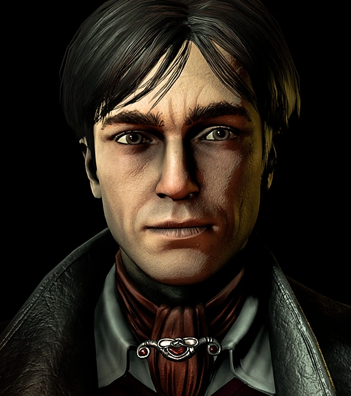
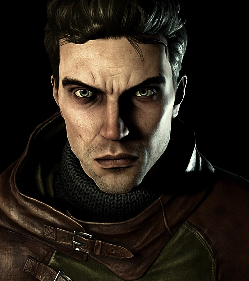
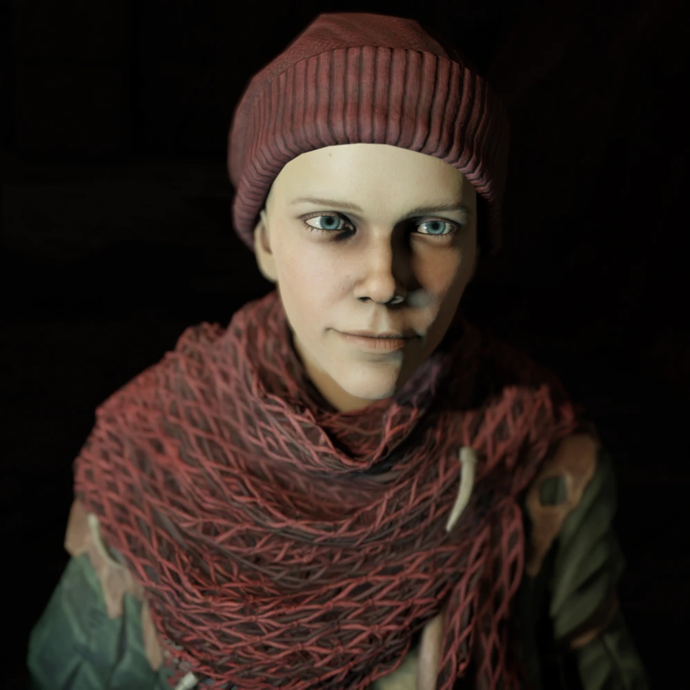

Uncover the
Mysteries of a Village in Despair.



Clique aqui
"Pathologic" é uma história contada por meio de três personagens geralmente conhecidos por seus títulos: o Bacharel (Бакалавр), o Harúspice (Гаруспик) e a Troca-peles (Самозванка). Cada um deles tenta descobrir a origem de uma estranha e letal doença conhecida como "praga da areia", que assolou uma pequena cidade. Os jogadores podem assumir o controle de cada um deles, e embora haja apenas uma história principal, cada personagem possui uma perspectiva diferente que pode fornecer ao jogador informações e insights que não tinham antes. A capacidade de descobrir alguns segredos depende do personagem que está sendo jogado, e os personagens também interagem com os outros dois personagens não escolhidos, discutindo seu progresso ao longo do jogo.
Dankovsky é um Bacharel em medicina e um especialista em tanatologia. Ele lidera a Thanatica, um laboratório de pesquisa na Capital dedicado ao ambicioso objetivo de destruir a própria Morte. Seu trabalho o tornou uma celebridade e ele é renomado até mesmo entre os habitantes da Cidade. É evidente que sua pesquisa não apenas despertou admiração, mas também algum desagrado, já que há poderes que prefeririam vê-lo silenciosamente eliminado.